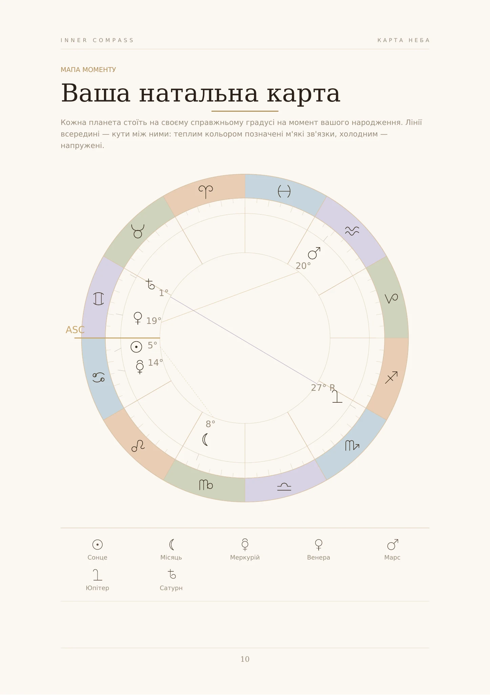
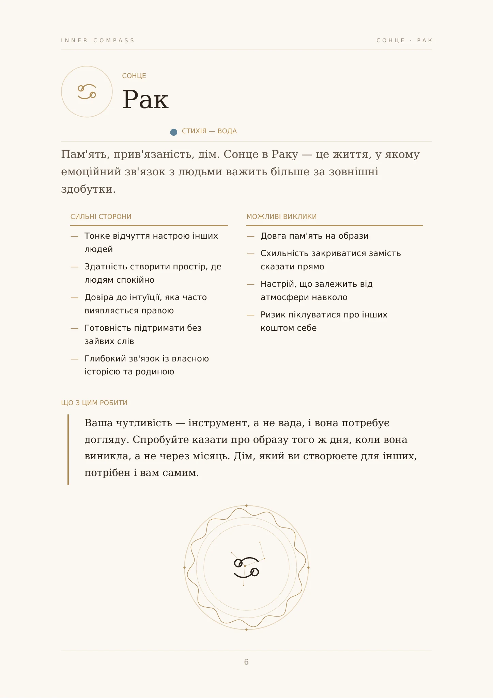
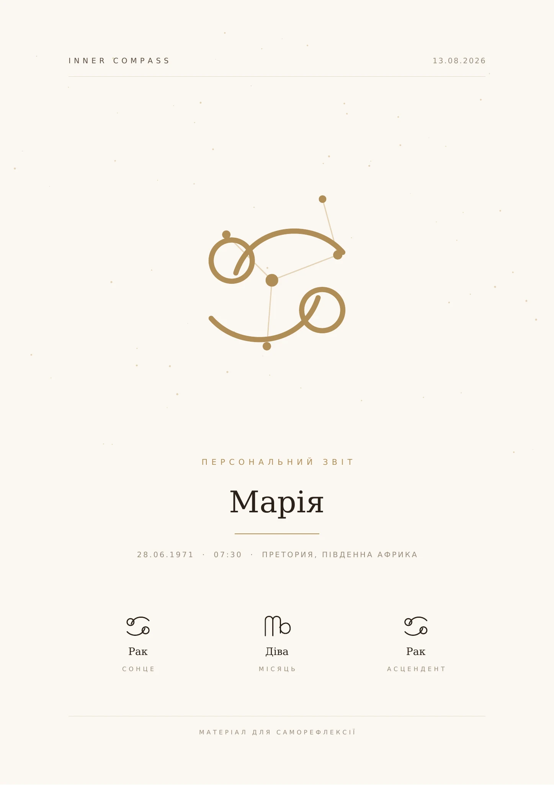
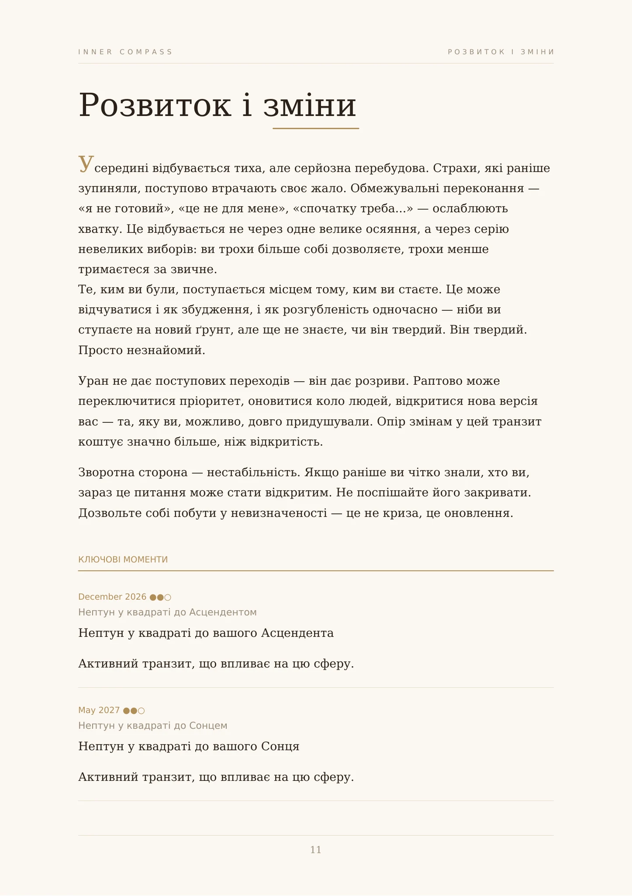
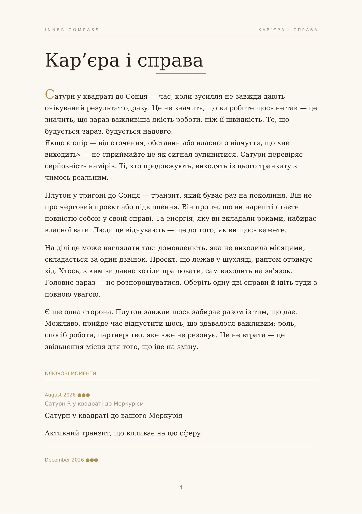
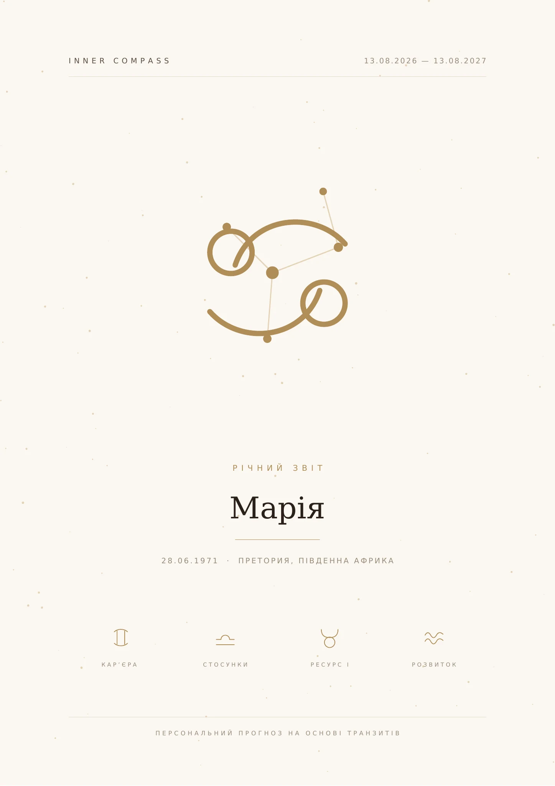

Inner Compass
Натальна карта, характер, ресурси, суперечності та повторювані сценарії.
99 ⭐
Отримати звіт →Персональний розбір натальної карти, який допомагає побачити твої сильні сторони, внутрішні суперечності та повторювані сценарії.
Не гороскоп. Твоя персональна карта самопізнання.
Чому я знову опинився в схожій ситуації?
Чому деякі рішення даються легко, а інші я відкладаю роками?
У чому моя справжня сила?
Чому я реагую саме так, хоча сам розумію, що це мені заважає?
Що мені насправді потрібно, щоб відчувати внутрішню опору?
Можливо, відповідь не в тому, щоб ще більше аналізувати себе. А в тому, щоб побачити себе з іншого ракурсу.
Подивись, що Inner Compass може показати про тебе ↓


Натисни, щоб роздивитися ближче
Це не приклад шаблону. Це реальний персональний звіт, створений Inner Compass на основі конкретної натальної карти.
Сильні сторони, внутрішні суперечності та характерні сценарії.
Сонце, Місяць та Асцендент — окремо й зрозуміло.
Реальні положення планет та аспекти на момент народження.
Будь-який повний звіт · 99 Telegram Stars
На що ти можеш спиратися і які якості працюють на тебе природно — без зусиль і без ролі.
Чому різні частини тебе іноді хочуть зовсім різного — і як це проявляється у щоденних ситуаціях.
Які патерни можуть повторюватися у твоїх рішеннях та реакціях — і звідки вони беруться.
Що допомагає тобі відчувати внутрішню стабільність і опору — і що виснажує тебе найбільше.
Яке враження ти створюєш і як природно будуєш контакт із людьми — навіть не помічаючи цього.
Практичні точки для самоспостереження та особистого розвитку — конкретно і без загальних порад.
Дата, точний час та місце народження допомагають побудувати персональну натальну карту. Чим точніший час — тим детальніший аналіз.
Система визначає ключові астрологічні фактори і формує структурований контекст для AI-інтерпретації — позиції планет, аспекти, будинки та їхні взаємозв'язки.
Через кілька хвилин ти отримуєш зрозумілий PDF — про сильні сторони, внутрішні суперечності та характерні сценарії саме твоєї особистості.
Глибокий розбір натальної карти, перекладений із мови астрології на зрозумілу мову про тебе — характер, мотивація, сильні сторони та внутрішні суперечності.
Не передбачення майбутнього, а карта періодів і тем, які можуть стати для тебе важливими. Транзити — це не вирок, а клімат: вони створюють умови, рішення залишається за тобою.
Подивитися мій рік →


Натальна карта враховує положення Сонця, Місяця, планет, Асцендента, будинків та взаємозв'язків між ними. Кожен елемент додає новий шар розуміння.
Inner Compass збирає ці фактори разом і перетворює складну карту на зрозумілий персональний розбір — без жаргону і загальних фраз.
Одна акційна ціна на старті. Оплата відбувається безпосередньо в Telegram, а готовий PDF надходить у цей самий чат.
Натальна карта, характер, ресурси, суперечності та повторювані сценарії.
Активні періоди, ключові теми року, ризики та конкретні дії.
Синастрія, графіки взаємодії, сильні аспекти та план для пари.
Inner Compass використовує натальну карту як основу для персональної саморефлексії. Система аналізує астрологічні фактори карти та за допомогою AI перетворює їх на зрозумілу інтерпретацію про характер, мотивацію, сильні сторони та внутрішні суперечності.
Бажано, але не обов'язково. Без точного часу Асцендент і будинки не розраховуються, але Сонце, Місяць та інші планети дадуть повноцінний аналіз. Якщо часу немає — просто напиши боту.
Зазвичай кілька хвилин. Система розраховує натальну карту, виділяє ключові фактори та формує персональний PDF.
Так. Кожен звіт формується індивідуально на основі даних конкретної натальної карти, тому зміст та акценти відрізняються для кожної людини.
Персональний портрет — це аналіз твоєї особистості на основі натальної карти: хто ти, як мислиш, де сила і де внутрішні суперечності. Він не змінюється з часом. Прогноз на рік — це аналіз актуальних транзитів: які теми активуються в твоєму житті зараз і в найближчі місяці. Ці два формати доповнюють один одного.
Inner Compass призначений для саморефлексії та особистого розвитку. Він не замінює психолога, лікаря чи іншого фахівця і не є медичною або будь-якою іншою рекомендацією.
Акційна ціна кожного повного звіту — 99 Telegram Stars. Остаточну суму Telegram покаже перед підтвердженням оплати.
Почни з персонального розбору і подивись на себе з нового ракурсу.
Отримати свій Inner Compass →Будь-який повний звіт · 99 Telegram Stars